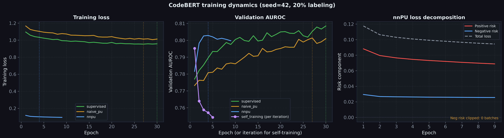
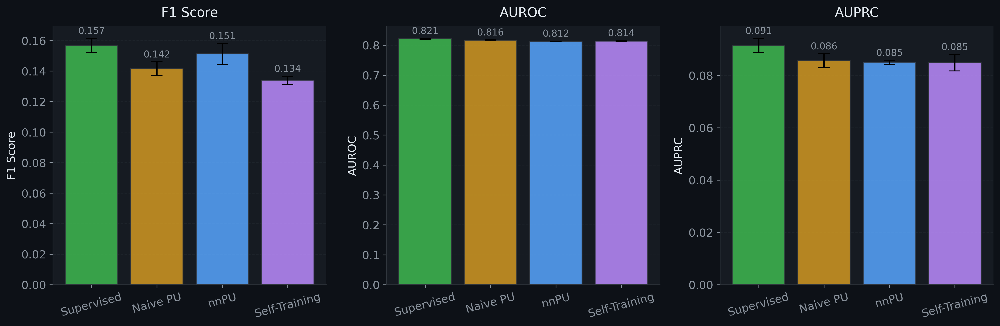
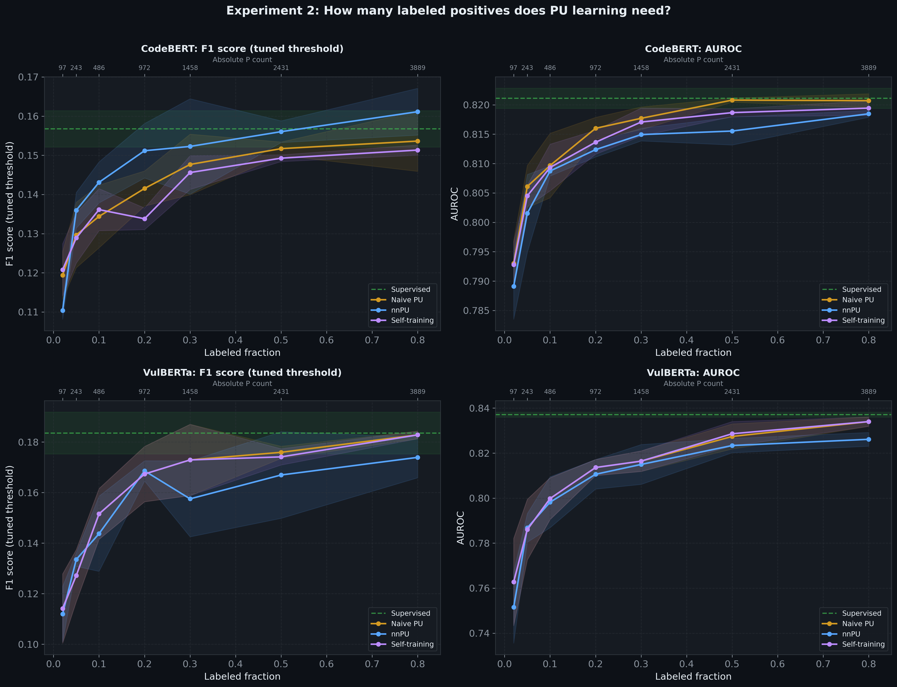
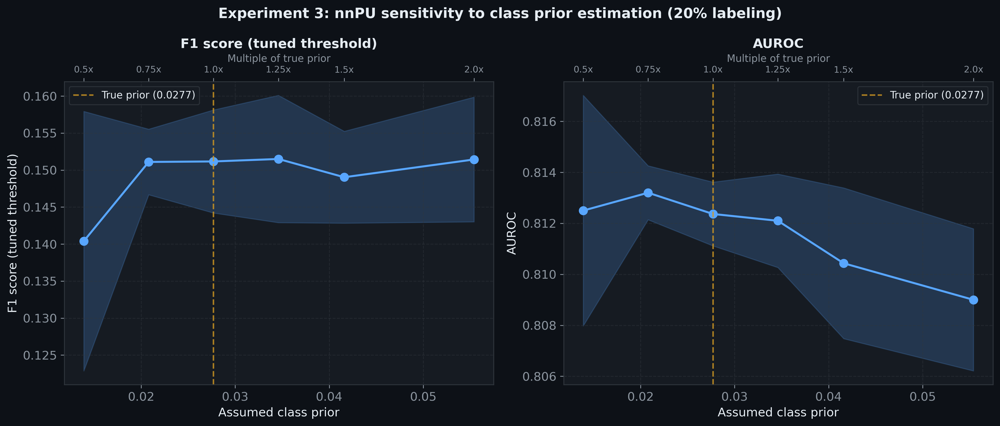
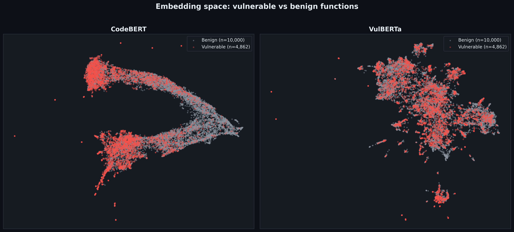

Software vulnerability detection is typically framed as a binary classification problem. Given a function's source code, predict whether it contains a security vulnerability. This formulation assumes reliable positive and negative labels. In practice, that assumption falls apart.
Functions confirmed as vulnerable, through CVE reports, security advisories, and patch commits, are trustworthy positives. But "benign" labels are assigned by exclusion. A function is called safe simply because nobody has found a vulnerability in it yet.
In production, labels are generated by triage. A security team runs deliberately aggressive static-analysis scanners that flag CWE-pattern matches and produce many false positives. An expert then reads each finding, traces data flows, and determines whether the pattern is exploitable. This takes 15–60 minutes per finding.
The result is the PU structure shown in Figure 3, a small set of confirmed positives and a large pool of unlabeled data with no confirmed negatives. PU learning has been studied for vision and tabular data [11], and PILOT [3] recently demonstrated it can work for vulnerability detection. But a fundamental question remains unanswered.
This project uses vulnerability detection as a laboratory for studying PU learning behavior. Rather than proposing a new method, I investigate when PU learning works on code and what makes it break.
PU learning is the standard name for this problem. Train a classifier from positives and unlabeled data, with no confirmed negatives. The published methods [11], [4] split into two families that differ in how they handle the unlabeled set.
The risk-estimator family rewrites the loss to account for hidden positives in U. nnPU [2] is a stability-corrected variant of the unbiased PU risk [1], and I use it as the family representative.
The pseudo-labeling family does not need a prior estimate. Instead it uses an initial classifier to identify likely negatives within U, then retrains. Self-training [10] is the canonical version, and the one I use here. PILOT [3] is a recent variant for vulnerability detection that uses distance-aware label selection.
Of prior PU work on vulnerability detection, PILOT is the closest. It is a method paper, with PU baselines compared at a single 30% labeling ratio and no per-CWE breakdown. A general empirical comparison of PU families [4] worked on image and tabular benchmarks rather than code. Neither answers how PU performance scales with the labeling budget on code, or whether the two families fail at different points.
The natural approach would be to fine-tune CodeBERT end-to-end for each configuration (method × labeling fraction × prior × seed). This is roughly what PILOT [3], the closest prior PU work on code, does with its multi-stage contrastive pipeline. For my full sweep that is over 100 training runs at 5–10 hours each on a single GPU. I estimated the total compute cost.
Instead, I use a feature extraction strategy that decouples the representation from the PU investigation. The pipeline has two stages. First, every function is passed through a frozen encoder exactly once, producing a 768-dimensional [CLS] embedding that becomes its fixed representation. I run this extraction with two encoders in parallel. The primary is CodeBERT [6] (microsoft/codebert-base, 125M parameters). The second is VulBERTa [12] (claudios/VulBERTa-mlm), a RoBERTa-style model pretrained specifically on C/C++ with a vulnerability-aware tokenizer, used as a replication check. Second, all PU experiments operate on these embeddings with lightweight MLP classifiers that train in seconds on CPU. This cuts a 500+ GPU-hour plan down to about an hour of CPU time, which gives me room for proper error bars and sweeps across dozens of configurations on both representations.
I compare four methods spanning two PU families plus bounds.
Trained on full labels. The ceiling for what fixed embeddings can achieve.
Treats all unlabeled data as negative. The simplest possible baseline.
Risk estimator with a non-negative correction [2]. Requires a class prior estimate.
Iteratively identifies likely negatives in U and retrains. Prior-free.
nnPU is the most involved of the four methods, so it is worth walking through the loss. The non-negative PU risk [2] reweights the standard binary classification risk using only the labeled positive distribution, the unlabeled distribution, and a class prior π = P(Y = 1).
The loss has three terms. The first is the loss on labeled positives, weighted by the prior. The second is the loss treating unlabeled samples as negative. The third subtracts off the negative-loss contribution that the unlabeled set inherited from its hidden positives, clamped at zero by the max(0, ·) so a flexible classifier cannot drive it below zero and destroy the model.
Everything in the nnPU experiments below uses this loss with a logistic surrogate for ℓ and PrimeVul's marginal class prior π = 0.0277 as the default.
I use PrimeVul v0.1 [5], which contains 175,797 training functions (4,862 vulnerable, 170,935 benign), with 23,948 for validation and 24,788 for testing. The splits are chronological. Training data comes from older commits, test data from newer ones. PrimeVul also provides 435 matched pairs of vulnerable functions and their patched versions for pairwise evaluation.
To simulate the PU setting, I sample a fraction of the vulnerable training functions as the labeled positive set P. The rest (remaining vulnerable + all benign) becomes U with labels stripped. At 20% labeling (the default), P contains 972 functions and U contains 174,825, of which 3,890 are hidden vulnerabilities. Validation and test sets keep their full labels throughout.
All methods share the same architecture, a 2-layer MLP (256 hidden, ReLU, 30% dropout) that takes a 768-d embedding and outputs a single logit. That is 197,377 parameters, deliberately small. The variation in this study is across PU method and labeling budget, not across model capacity, so the classifier is held fixed across runs.
Each method trains with Adam at learning rate 1e-3, batch size 512, up to 30 epochs, with early stopping on validation AUROC at patience 5. The recipe is the same for all four methods so optimization-side differences cannot bias the comparison across PU losses.
I track training loss and validation AUROC each epoch. Figure 5 shows the four methods' training curves at 20% labeling for seed 42. All four loss curves descend monotonically and plateau within 10 to 15 epochs. On this run the non-negative-clipping term never activated (0 batches clipped), suggesting nnPU produced an unbiased risk estimate throughout training.

| Method | Family | Training signal | Requires class prior? |
|---|---|---|---|
| Supervised MLP | Upper bound | Full labels (all 175K) | No |
| Naive PU | Lower bound | P=1, all U=0 | No |
| nnPU [2] | Risk estimator | Separate P and U batches, risk-estimator loss with a non-negative correction | Yes (default 0.0277) |
| Self-training [10] | Pseudo-labeling | Iterative. Train on P vs U, score U, select confident negatives, retrain | No |
The supervised and naive PU baselines use BCE loss with a positive class weight (n_neg / n_pos) for class imbalance. nnPU uses the risk estimator from Kiryo et al. [2], clipping the negative risk term at zero to avoid a known instability. Self-training runs 5 iterations. Each selects the 10% of U with the lowest predicted vulnerability as reliable negatives and retrains a fresh MLP on P plus those.
I run three experiments.
| Experiment | What varies | What is fixed | Question |
|---|---|---|---|
| 1. Baseline comparison | Method (all 4) | 20% labeled (P=972), prior=0.0277, 3 seeds | Which method works best? How close to supervised? |
| 2. Labeling budget | Labeled fraction 2%-80% (P=97 to P=3,890) | nnPU + self-training, 3 seeds | How many labeled positives does PU learning need? Is there a cliff? |
| 3. Class prior sensitivity | Assumed prior (0.5x-2x true) | nnPU, 20% labeled, 3 seeds | How wrong can the prior estimate be? |
Experiment 2 is the central one. The absolute P count (97, 243, 486 for 2%, 5%, 10% labeling) is what generalizes across datasets, because a security team deciding how many findings to label cares about the count, not the fraction of a denominator they do not know. Figure 7 plots the labeled fraction along the bottom x-axis and the absolute P count along the top, so both views appear in the same panel.
I also stratify test set results by CWE type (for categories with at least 10 test samples) to see whether syntactically distinctive types like buffer overflows (CWE-119) hold up better than semantically subtle ones like race conditions (CWE-362).
All experiments use 3 random seeds (42, 123, 456) with mean and standard deviation reported. I separate two sources of randomness, the PU split seed (which positives go into P) and the model training seed (weight initialization and batch order). The baseline uses a 3×3 grid of split × model seeds (9 runs per method) to decompose variance. If split dominates, averaged results hide instability.
Following PrimeVul [5], I report these metrics.
| Metric | What it measures | Direction |
|---|---|---|
| F1 score | Harmonic mean of precision and recall, with threshold tuned per method (PU outputs uncalibrated probabilities, so 0.5 is not a meaningful boundary). | Higher is better |
| AUROC | Threshold-free area under the ROC curve. | Higher is better |
| AUPRC | Area under the PR curve. More informative than AUROC on imbalanced data. | Higher is better |
The four methods cluster within a few F1 points of supervised, and within each other.
At 20% labeling (P = 972 labeled positives), supervised training reaches F1 = 0.157 (SD 0.002) and AUROC = 0.821 (SD 0.002) across three seeds. The best PU method is nnPU, at F1 = 0.151 and AUROC = 0.812. The paired gap on AUROC is 0.009 (CI 0.008-0.010, t(2) = 32.0, p = 0.001), small but reliable. Naive PU and self-training cluster just below nnPU. No PU method collapses. Even the weakest is within 0.025 F1 of supervised.

Cutting the labeling budget down to a few hundred positives does not collapse PU performance.
Varying P from 97 (2% labeling) to 3,889 (80% labeling) for the three PU methods produces a smooth degradation rather than a collapse. A piecewise linear fit of F1 against log P places the change-point at P = 243 (5% labeling), not the 10% the eyeballed table had suggested. Below 5%, F1 gains per doubling of P are roughly twice what they are above. AUROC plateaus around 20% labeling, barely moving between P = 972 and P = 3,889. nnPU is the strongest PU method at every labeling fraction tested. The VulBERTa panel in Figure 7 shows the same curve shape, with F1 shifted up by 0.01-0.03 points. The method ordering is preserved.

Getting the prior wrong by a factor of two costs almost nothing.
nnPU requires a class-prior estimate. Sweeping from 0.5× to 2× the true prior (0.0277) moves F1 by about 0.01 and AUROC by less than 0.01, both within the seed-to-seed noise. A practitioner who estimates the prior within a factor of two of truth loses almost nothing in predictive performance.

Pooling test CWEs into memory-safety (n = 271), logic/semantic (n = 145), and concurrency (n = 10) and comparing supervised to nnPU across five seeds gives relative recall drops of 12% (SD 13%) for memory safety and 3% (SD 21%) for logic/semantic. The paired difference is 9% (t(4) = 1.5, p = 0.20). The point estimate runs against the hypothesis (memory safety drops more, not less), but the difference is not statistically distinguishable from zero, and n = 5 cannot rule out either direction. Concurrency has too few test samples to compare.
Self-training underperforms nnPU at every labeling fraction. A reasonable suspicion is that CodeBERT embeddings aren't good enough for pseudo-labeling to bootstrap from, and that a vulnerability-aware encoder would rescue it. VulBERTa is the cleanest test of that suspicion and every seed × method pair improved (12 of 12, two-sided sign-test p = 0.0005), with F1 gains of 10% to 24%, but the method ordering did not change. Self-training was still worst. It appears that the failure is algorithmic rather than representational. The pseudo-labeling loop propagates errors from a ranker whose AUROC starts around 0.81, and a better encoder does not save it.
The hypothesis had three clauses, and the evidence splits them unevenly. The first clause, that there is a labeling threshold "below which PU learning collapses," fails. No method collapses anywhere in the sweep, and the weakest PU method still holds F1 ≈ 0.11 at P = 97. Piecewise linear regression finds a knee at P = 243 (SSE reduced 97% against a single-slope fit), where the per-doubling F1 gain drops by more than half. The second clause, that risk estimators and pseudo-labeling differ, is supported more strongly than predicted. nnPU degrades smoothly through a knee while self-training never enters a comparable recovery regime. The third clause, that memory-safety CWEs would hold up better than logic/semantic ones, is not supported (see per-CWE stratification above).
Every result above sits under a frozen-encoder ceiling. CodeBERT gives a miss rate of 0.96 at a 0.5% false positive rate, and pairwise accuracy on held-out vulnerable/benign pairs is 0.25 (below the 0.5 chance rate). The UMAP projection in Figure 11 shows why. Vulnerable and benign functions overlap heavily. VulBERTa narrows the gap but does not cross F1 = 0.20 at full labels. The goal here was PU learning on a fixed representation, not state-of-the-art vulnerability detection. A practitioner who fine-tunes the encoder might see larger gains than any PU method choice delivers.

Yes, with caveats. Hand-written rules and shallow features such as token n-grams cannot capture function-level vulnerability semantics at PrimeVul's scale, and some kind of learned representation is doing real work in any approach that gets above F1 = 0.10 on this benchmark. Where the question gets interesting is at the margin. CodeBERT does most of the lifting in this study, and switching to VulBERTa, a model pretrained on C/C++, lifts every method's F1 by 12% to 25% without changing the ranking. The PU choice on top of that representation matters less. A practitioner should weigh the cost of running a code-pretrained encoder against the small marginal gain of choosing nnPU over naive PU. The encoder is the value, and PU is the housekeeping that lets you train on the labels you actually have.
This work is dual-use. The same scanner that helps a defender clear a triage queue helps an attacker pick targets, and the two sides are not playing the same game. A defender wades through ninety-nine false positives for the hundredth real bug to pay off. An attacker only needs one true hit.
That gap has gotten worse over the past two years. Large language models have made the path between "this function looks suspicious" and a working exploit much shorter than it used to be. What was a skilled researcher's afternoon is now a prompt or two. Anyone publishing in vulnerability detection is contributing to attack tooling whether they mean to or not, and a methodological disclaimer does not change that. Comparing PU paradigms on a public benchmark instead of shipping a deployable scanner is a partial hedge.
Does PU learning work for vulnerability detection? On this data, yes. nnPU stays within 0.01 AUROC of full supervision down to a few hundred labels, and getting the prior wrong by a factor of two costs almost nothing. The labeling curve has no cliff. A security team with a few hundred confirmed bugs out of a triaged thousand can pick nnPU and move on. Self-training will not rescue a weak ranker.
The result comes with two qualifications. nnPU and self-training are not in the same league. Self-training fails at every labeling fraction tested, and VulBERTa's 12-of-12 lift across method and seed combinations made it clear the failure is algorithmic, not a representation problem. Picking the right family matters more than tuning within one. The other qualification is that the absolute numbers are not great. F1 lands around 0.15, and pairwise accuracy on patched pairs is below the 0.5 chance rate. The ceiling here is the representation, not the labels. Anyone who fine-tunes the encoder might see larger gains than any PU method choice delivers.
nnPU is a valid method for sparsely labeled vulnerability data, in the narrow sense that it does about as well as full supervision can on this representation. Whether that is good enough to deploy depends on the encoder, not the method.